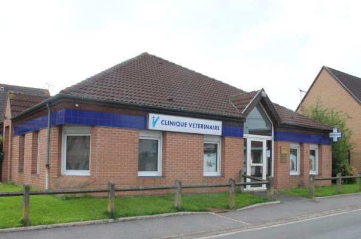

Notre Structure
C'est avec un certain plaisir que nous vous accueillons sur notre site vitrine internet.
Notre équipe de vétérinaires et d'ASV sont au service des animaux et de leurs propriétaires afin de proposer la meilleure qualité de service possible.
Lors de nos visites, n'hésitez pas à demander des conseils, prendre rendez-vous ou vous réaprovisionner en produits vétérinaires.
Bonne visite...
Notre Équipe
Vétérinaires
Dr Catherine BEUVRY : Ecole Nationale Vétérinaire d'Alfort. Habilitée à pratiquer l'évaluation comportementale des chiens.

Dr Nathalie THIRY : Université de Liège. Formée en insémination artificielle et suivi de reproduction.
ASV
Stéphanie : Accueil, vente, commandes, soins des animaux.
Stéphanie : Accueil, vente, commandes, soins des animaux.
Que proposons nous ?
Nos Services
Médecine Générale
Notre équipe s'occupe des soins de vos animaux du mieux possible et reste toujours à l'écoute si besoin. La médecine générale regroupe des consultations de premier avis pour divers motifs quand vous n'avez jamais vu un vétérinaire (amaigrissement, toux, diarrhée, vomissement…).
Radiologie
Notre clinique est équipée d'un appareil de radiologie numérique. Tous les examens sont stockés pendant plusieurs années, les images peuvent être retravaillées et envoyées par mail à nos clients.
Chirurgie
Les interventions chirurgicales regroupent divers types d’opérations ,elles sont générales ou spécialisées. On retrouve par exemple: la chirurgie digestive, thoracique, neurologique. On pratique aussi les opérations dites de « convenance » : essentiellement les interventions de castration et d’ovariectomies.
Insémination
On travaille essentiellement avec de la semence fraîche c'est-à-dire que la semence du mâle est prélevée puis directement déposée dans les voies génitales de la femelle après contrôle de la semence au microscope.
Analyses de sang
Nous utilisons le microscope pour analyser différents types de frottis (sanguin, urinaires, vaginaux, raclages cutanés...) et effectuer des recherches d'agents pathogènes pour les animaux de compagnie (bactéries, champignons, agents de la gale, parasites digestifs, ...).
Hospitalisation
L’hospitalisation de votre animal peut être un moment difficile à vivre, pour vous comme pour lui, mais elle s’avère parfois indispensable lorsque son état de santé le nécessite, ou lorsque des soins intensifs doivent être prodigués.
Informations et Contact
Appelez-nous
03 21 69 68 67
Nos horaires
Lundi-Vendredi: 9h-12h / 14h-19h
Samedi 9h-12h / 14h-17h
Important
Uniquement sur rendez-vous
À savoir:
En cas d'urgence :
Pour les URGENCES en dehors des heures d'ouverture, merci d'appeler:
VETERINAIRES à DOMICILE : 03 20 53 23 23
NORD VET : 03 20 51 00 66.
Notre partenaire :
Chronovet est une boutique vétérinaire spécialisée dans la vente de produits vétérinaires et d’alimentation pour animaux de compagnie.
Cliquez sur l'image pour rejoindre le site et accéder à des produits de qualité.
- - Clinique Vétérinaire des Docteurs Beuvry et Thiry
- - 118 RUE CYPRIEN QUINET
- - 62220 CARVIN
Photo de la clinique
